The Solitude CMS website template is made for travel bloggers and food influencers who need a flexible and versatile Webflow template to grow their following.
Structure
The structure of this template is built primarily using a 12-column layout structure.
To create a column layout, a section will need a parent div block with a class of “12 Columns”. Combo classes are available to change alignment.
Then, place div blocks with the class of “Column” inside. These will turn into your columns so there should be as many as you need.
Then, you can add a specific combo class that will determine the numbers of columns the content utilizes. For example, a layout with content on the left and an image on the right might use the combo class of “Desktop 6” for both columns. This means each block will take up 6 columns, or 50% of the available width.
Combo classes can be added to change width of column for tablet and mobile devices.
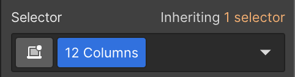
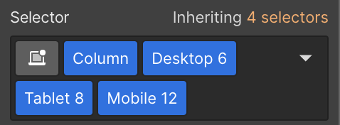
Sections and containers
Sections and containers should be used for each block of content. Sections organize content and apply top and bottom padding to the block. Containers set a maximum width that responds with the device size. Both sections and containers have classes and combo classes for variations that you can reference below.
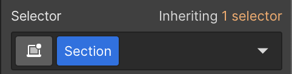
Applied to Webflow section element, this adds top and bottom padding to the content.
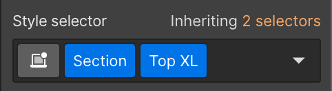
Changes top padding found in Section class to a large value.
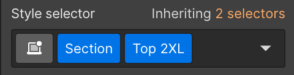
Changes top padding found in Section class to an extra large value.
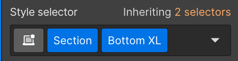
Changes bottom padding found in Section class to a large value.
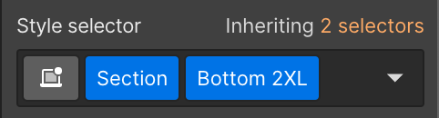
Changes bottom padding found in Section class to an extra large value.
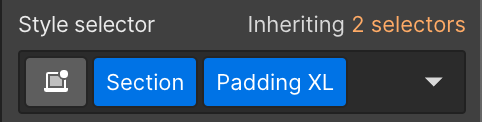
Changes top and bottom padding found in Section class to a large value.
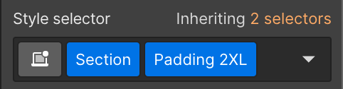
Changes top and bottom padding found in Section class to an extra large value.
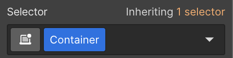
Applied to div block nested inside section element. This limits all content to a maximum width.
Components
This template features pre-built components to allow for quick and easy page building. The template has components for the navigation, footer and common sections that would generally be repeated. You can view the full list of components here. Components can be used in three ways:
Identical content for each instance: This is useful for the navigation and footer where it should be identical on every page. Making a change to the instance in one place will update it on every page.
Component properties: For components that utilize Webflow's properties, such as the Content Card component, you can use the right sidebar to make text, image and link updates on that single instance without affecting other instances. This is great for modules that have varying content across the site but the layout and style should always be the same.
Unique content: When you need to change text or images on other components but don't want it to affect other instances, it is best to unlink the instance by right-clicking on the component and selecting "Unlink Instance". This will maintain all the existing styling but will allow you to change content without affecting the symbol.
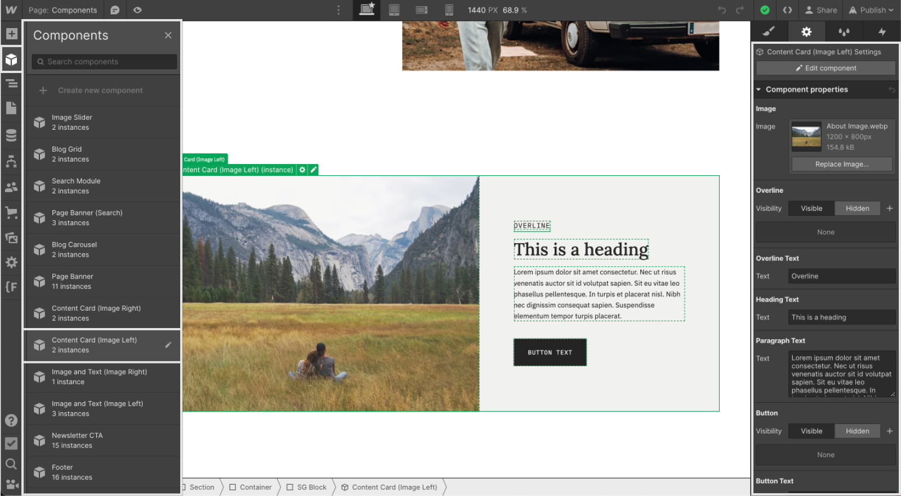
How to use
Access the components in the left toolbar. Select the desired component to place it on the page.
Double-click into the component to globally update any content.
Use the Component properties in the right sidebar to make unique content changes without affecting other instances of that component.
If the component needs to be completely unique, simply right-click on the component and select "Unlink Instance".
Style guide
A style guide is provided to easily update styles that will change globally on the site. Visit the style guide here.
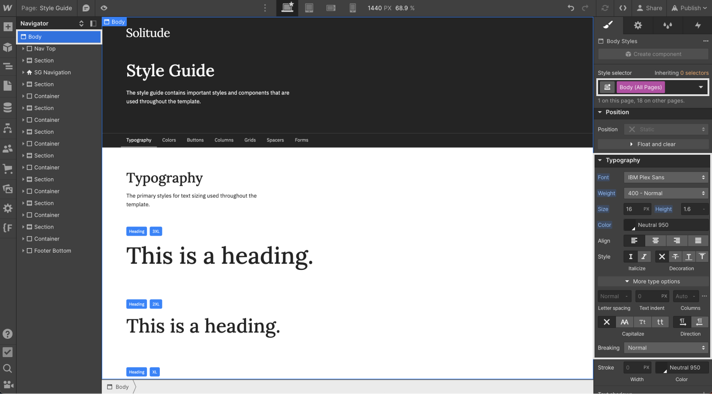
Typography
Updating the font and font sizes should be done in the style guide. To update the primary font, select the Body element and then choose the Body (All Pages) tag from the style panel. Making changes here will update the font across the entire project.
To update headline font and sizes, select each headline and then change to your desired styling.
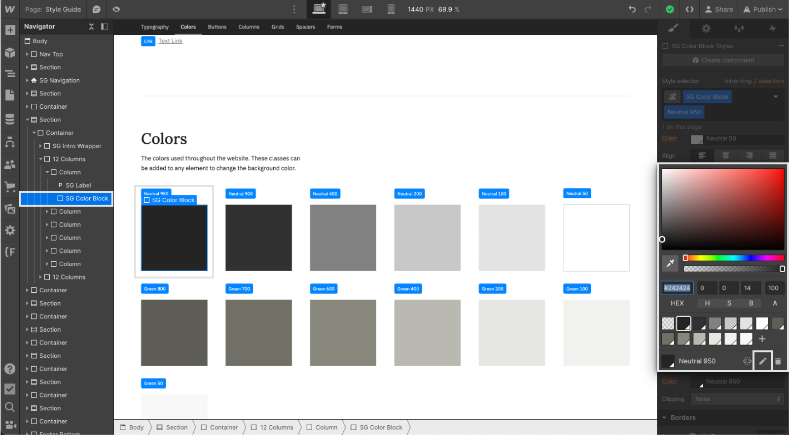
Colors
To change the website colors, navigate down to the colors section in the style guide. Select one of the color blocks.
In the style panel, select the background color.
In the pop-up, choose the pencil icon to change the primary color. This will change the color across the entire site.
More information
For further information, please visit Webflow University for in-depth tutorials.
Subscribe for weekly emails about our latest adventures
Thank you! Your submission has been received!
Oops! Something went wrong while submitting the form.